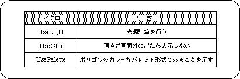
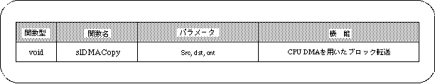

Return to previous page | Return to menu | Go to next page
The last parameter is “Option”. Specify other settings for polygons and textures here. The current SGL supports only the following three options.

Multiple of these options can be specified using the or operator "|".
Caution
If you do not use an option, specify the macro “No_Option”.
Use "UsePalette" and "UseLight" together if you want to calculate the light source when the polygon color is in palette format.
In this chapter, the functions in the following table were explained.
